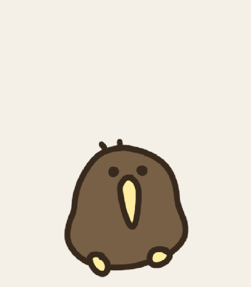
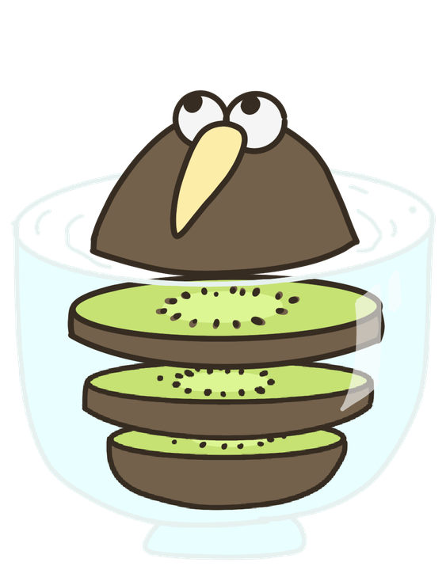

01
在桌面散散步
会呼吸、眨眼、四处走动，也会在屏幕边缘乖乖转身。拖到哪里，它就住在哪里。
它会散步、眨眼，也会在你专注太久时，
轻轻提醒你喝水、起身、歇一会儿。

不只是一只可爱的鸟
Kiwi 安静待在桌面，不抢注意力。 需要的时候，它才会带着一点恰到好处的存在感出现。
会呼吸、眨眼、四处走动，也会在屏幕边缘乖乖转身。拖到哪里，它就住在哪里。
久坐或忘记喝水时，Kiwi 会探出脑袋提醒你。摄像头识别只在本机完成。
读取本机任务事件，任务进行时安排短暂休息，完成后告诉你本次处理耗时。
连接飞书日历，同步未来 24 小时日程，在开会或专注工作前及时提醒。
就是这么自然
单击展开快捷操作，双击就让 Kiwi 立即出门散步。 透明置顶窗口可以跨桌面显示，也会遵循系统的“减少动态效果”设置。

LOCAL ONLY一帧一释放隐私不是一句口号
摄像头画面只在本机内存中处理，不保存，也不上传。 每次只捕获一帧、识别一帧，然后立即释放。
三步，把 Kiwi 带回桌面
获取适用于 Apple Silicon 与 Intel Mac 的通用安装包。
双击 .pkg，Kiwi 会自动进入“应用程序”文件夹。
首次启动如被拦截，请右键 Kiwi.app 并选择“打开”。
当前版本使用临时代码签名，尚未经过 Apple 公证。请只从本项目的 Releases 页面下载。SHA-256：9d86c5e4…f20876